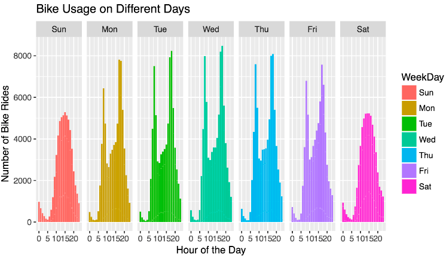
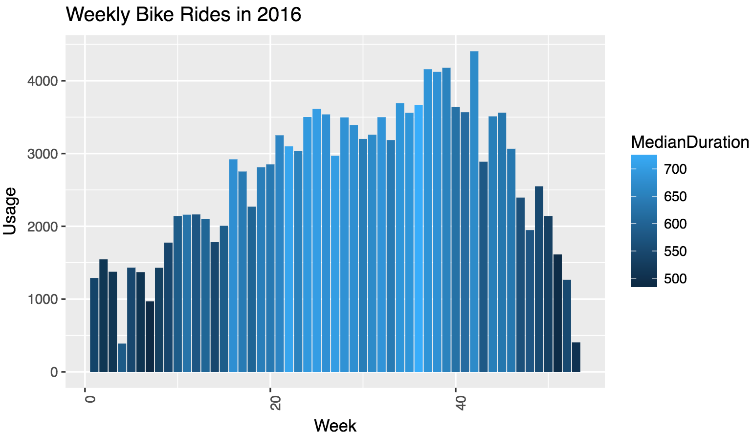
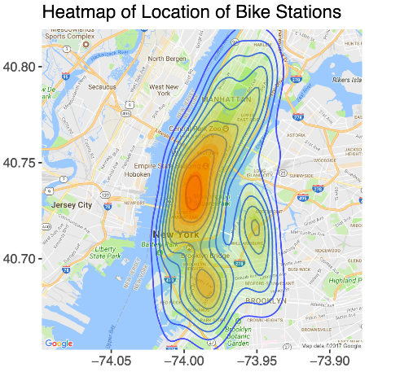
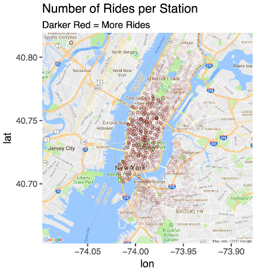
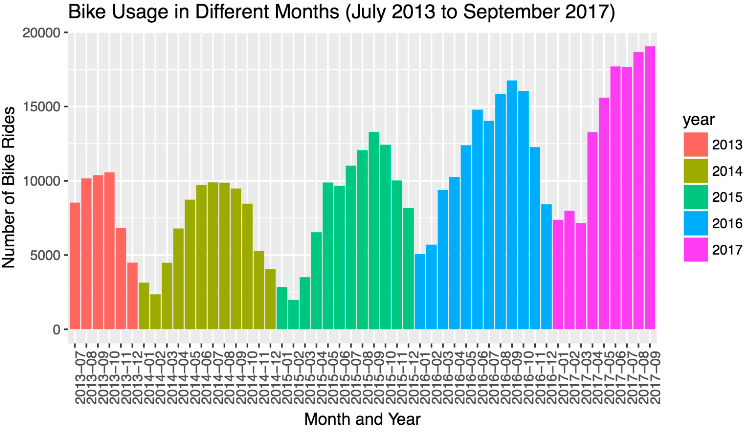

For my math class "Computational Statistics," I worked with the Citi Bike NYC Dataset.
With over 40 million bike ride entries in the dataset, I uploaded the file into a SQL database, and then worked with a 1% random sample in R. I learned a lot about working with large datasets.
You can read the final report here.
Below are a few of the graphs my teammate and I made:



